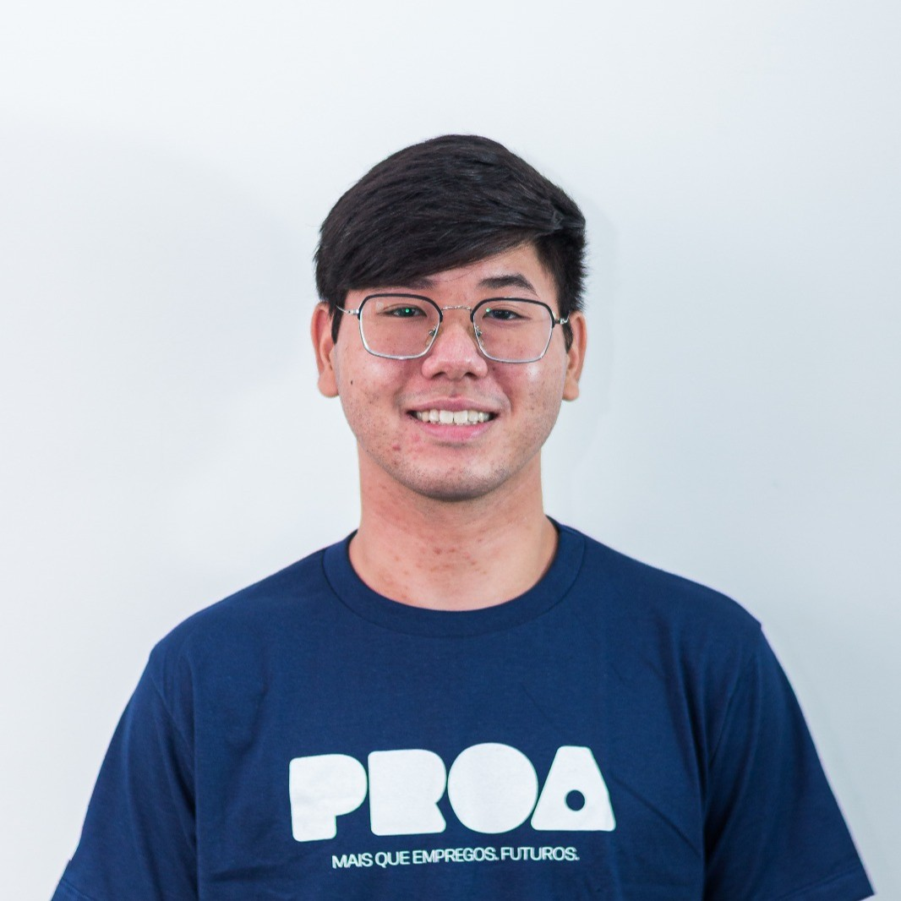

Prazer em Conhecer
Olá, sou o Enzo. Com uma base analítica sólida construída pelo curso Técnico em Mecatrônica, pelo quinto semestre de Engenharia da Computação e pela especialização Full-Stack no Instituto PROA, meu foco absoluto é atuar como Desenvolvedor Back-end. Carrego comigo uma determinação incansável para resolver desafios complexos, elevar minhas competências técnicas continuamente e agregar valor imediato às equipes de desenvolvimento. Minha força de vontade nasce de um propósito inegociável: transformar minha realidade por meio da tecnologia, construir uma trajetória de excelência e retribuir, com resultados e trabalho duro, o apoio de todos que apostam no meu potencial. Estou pronto para fazer a diferença.
Baixar o meu CV
Mapa de Carreira
Desenvolvedor Back-end (Júnior):
Conquistar minha primeira oportunidade como Estagiário ou Desenvolvedor Júnior representa o marco decisivo da minha trajetória na tecnologia. Tenho o foco absoluto em transformar meu domínio sobre linguagens e frameworks em soluções práticas, para entregar resultados dos projetos da empresa. Mais do que ocupar uma posição, minha meta é imergir no dia a dia corporativo, aprender com times experientes e adotar as melhores práticas do mercado. Com essa postura ativa, acelero meu amadurecimento técnico e agrego valor imediato à equipe.
Soft Skills exigidas para essa carreira:
- Comunicação clara e colaboração eficaz em equipe.
- Vontade de aprender e crescer.
- Gestão de tempo e foco.
- Resolução de problemas proativa.
Roadmap de Aprendizado:
- Dominar Python ou Java
- Django
- jQuery
- Depuração e teste de código
Desenvolvedor Back-end (Pleno):
Alcançar o cargo de Desenvolvedor Back-End Pleno representa o momento de consolidar minha expertise em arquitetura de software e aplicar práticas avançadas de segurança e manipulação de dados. Meu compromisso assume uma nova escala: liderar projetos complexos, entregar soluções robustas e construir sistemas altamente escaláveis. Utilizo esta etapa como base sólida para minha evolução rumo ao nível Sênior, onde conecto o desenvolvimento seguro à inteligência artificial. Minha determinação em dominar essas frentes reflete meu propósito de construir uma carreira de vanguarda e garantir um futuro sólido, baseado em excelência técnica e resultados consistentes.
Soft Skills exigidas para essa carreira:
- Visão de Negócio para entender como a linha de código impacta o usuário final e a rentabilidade da empresa
- Mentoria e facilidade para compartilhar conhecimento com colegas juniores
- Comunicação Assertiva em traduzir termos técnicos para gestores, clientes e outros times
- Autonomia e resolução de problemas complexos com foco preventivo e de segurança, sem a necessidade constante de supervisão
Roadmap de Aprendizado:
- Arquitetura de Software e Padrões de Projeto
- Engenharia de IA e Integração de Modelos
- Testes de segurança em aplicações (SAST e DAST)
- Escalabilidade e Sistemas Distribuídos
- Segurança da Informação Aplicada ao Back-end (DevSecOps)
Desenvolvedor Back-end (Sênior):
Alcançar o cargo de Desenvolvedor Back-End Sênior consolida minha posição como referência técnica de mercado. Nesta etapa, assumo a liderança de equipes e projetos complexos, onde asseguro a entrega de soluções de alta performance e máxima qualidade. Meu objetivo central é impulsionar a inovação constante na arquitetura de software e elevar os processos de desenvolvimento ao ápice da eficiência. Para potencializar esse impacto, direciono minha expertise rumo às fronteiras da segurança da informação e da Inteligência Artificial, com o firme propósito de gerar valor estratégico real e duradouro para a organização.
Soft Skills exigidas para essa carreira:
- Visão estratégica e capacidade de alinhar soluções técnicas com as metas organizacionais.
- Comunicação Assertiva e Transversal
- Excelente capacidade de liderança e mentoramento
- Capacidade de solucionar problemas complexos de forma criativa
- Senso de Propriedade (Ownership) e Autonomia, assumir a responsabilidade sobre todo o ciclo de vida do software
Roadmap de Aprendizado:
- Liderança Técnica, System Design e Visão de Negócio
- Engenharia de IA Avançada e MLOps no Back-end
- Segurança de Infraestrutura e Governança (DevSecOps Sênior)
- Proteção de dados
- Observabilidade Avançada e Engenharia de Confiabilidade (SRE)
Engenheiro de IA:
Como Engenheiro de IA, meu objetivo principal é traduzir a teoria pura da ciência de dados em produtos de software funcionais, altamente escaláveis e prontos para gerar valor real no ambiente corporativo. Tenho o foco voltado para projetar e desenvolver sistemas e agentes autônomos capazes de aprender, raciocinar e automatizar tarefas complexas.
Soft Skills exigidas para essa carreira:
- Pensamento Crítico e Ética
- Aprendizado Contínuo (Learnability)
- Comunicação e Tradução de Negócios
- Resolução Colaborativa de Problemas
Roadmap de Aprendizado:
- Engenharia de Software para IA
- Segurança e criptografia de dados
- MLOps e Observabilidade de IA (LLMOps)
- Arquitetura RAG e Bancos de Dados Vetoriais
- Arquitetura de Agentes Autônomos e Sistemas de Raciocínio
- Otimização de Modelos e Eficiência Computacional
Soft e Hard Skills
Afinidade com as seguintes tecnologias e técnicas:
BackEnd
-
Python
-
C
-
C++
-
MySQL
Frontend
-
HTML
-
CSS
-
React
-
JavaScript
-
UI/UX Design
-
Prototipagem
-
Figma
Soft Skills
- Trabalho em Equipe
- Comunicação Efetiva
- Adaptabilidade
- Resiliência
- Autoaprendizagem
- Resolução de Problemas
- Gestão do Tempo
Outras
- Git
- Github
- Pacote Office
- Figma
Idiomas
- Português (Nativo)
- Inglês (Avançado)